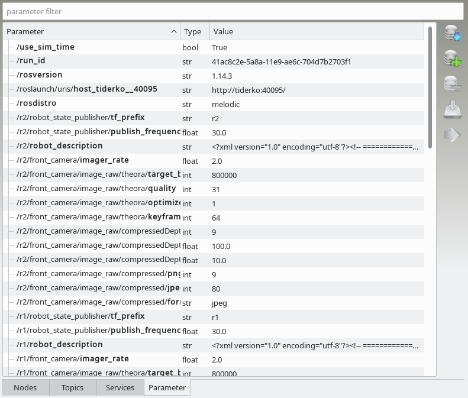

The Parameter tab shows all in ROS parameter server registered parameter. The value of the ROS parameter is also displayed. The parameter are not automatically requested or updated. Use get parameter button to load the parameter from ROS parameter server.

You can search for a parameter respectively his value using the filter row at the top.Parameter control buttons:
|
Loads parameter from ROS Parameter Server. |
| Adds a parameter to the ROS Parameter Server. | |
|
Deletes selected parameter from ROS Parameter Server. |
|
Saves selected parameter to a yaml file. |
|
Copy selected parameter to another ROS-Master. The destination master can be selected in prompt dialog. |